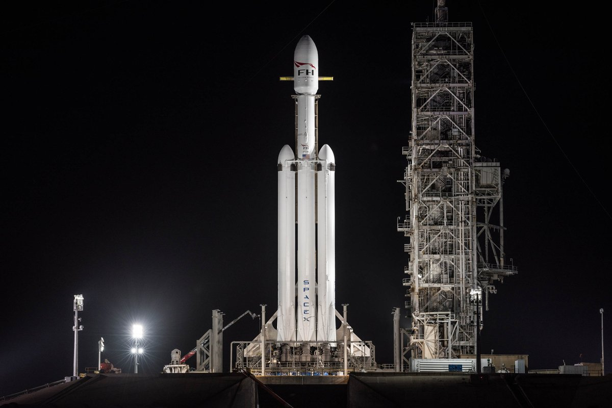
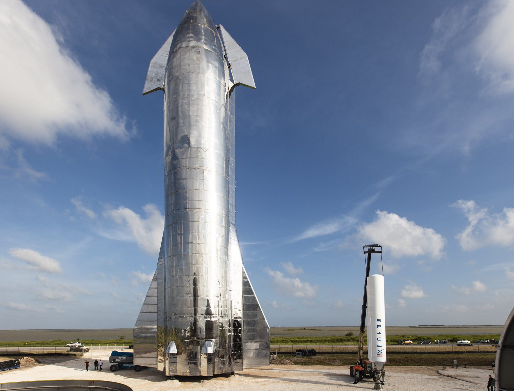

Falcon 9
Falcon 9 is a partially reusable two-stage-to-orbit medium-lift launch vehicle designed and manufactured by SpaceX in the United States. The latest version of the first stage can return to Earth and be flown again multiple times. Both the first and second stages are powered by SpaceX Merlin engines, using cryogenic liquid oxygen and rocket-grade kerosene as propellants. Its name is derived from the fictional Star Wars spacecraft, the Millennium Falcon, and the nine Merlin engines of the rocket's first stage. The rocket evolved with versions v1.0 (2010–2013), v1.1 (2013–2016), v1.2 Full Thrust (2015–present), including the Block 5 Full Thrust variant, flying since May 2018. Unlike most rockets in service, which are expendable launch systems, since the introduction of the Full Thrust version, Falcon 9 is partially reusable, with the first stage capable of re-entering the atmosphere and landing vertically after separating from the second stage. This feat was achieved for the first time on flight 20 in December 2015. Since then, SpaceX has successfully landed boosters over a hundred times,with individual first stages flying as many as eleven times.

Falcon Heavy
Falcon Heavy is a partially reusable heavy-lift launch vehicle designed and manufactured by SpaceX. It is derived from the Falcon 9 vehicle and consists of a strengthened Falcon 9 first stage as the center core with two additional Falcon 9 first stages serving as strap-on boosters. Falcon Heavy has the highest payload capacity of any currently operational launch vehicle and the third-highest capacity of any rocket ever to reach orbit, trailing the Saturn V and Energia.
SpaceX conducted Falcon Heavy's maiden launch on 6 February 2018, at 20:45 UTC. The rocket carried a Tesla Roadster belonging to SpaceX founder Elon Musk, with a dummy dubbed "Starman" in the driver's seat, as a dummy payload. The second Falcon Heavy launch occurred on 11 April 2019, and all three booster rockets successfully returned to Earth. The third Falcon Heavy launch successfully occurred on 25 June 2019. Since then, Falcon Heavy has been certified for the National Security Space Launch (NSSL) program.
Falcon Heavy was designed to be able to carry humans into space beyond low Earth orbit, although as of February 2018, SpaceX does not intend to transport people on Falcon Heavy, nor pursue the human-rating certification process to transport NASA astronauts.Both Falcon Heavy and Falcon 9 will eventually be superseded by the in-development Starship launch system.

Starship SN15
Starship is a fully-reusable and super heavy-lift launch vehicle in development by SpaceX, with the main aim of having very low operating cost. Generally, the rocket uses liquid oxygen and liquid methane, with its structure divided into two stages: Super Heavy booster and Starship spacecraft. Notably, the ladder of which has four extruding flaps, which are used for its atmospheric entry and descent phase. The spacecraft can also be made into many variants, each optimized to serve a particular type of mission. As a direct result, Starship is selected for many space programs, such as the Artemis program or the dearMoon project. It is also integral to SpaceX's ambitions of colonizing Mars and make rapid transport between locations on Earth possible. The launch of Starship begins at either Starbase, Kennedy Space Center, or two SpaceX's offshore launch platforms. With the rocket pointed upright, the Super Heavy booster fires thirty-three Raptor engines, lifting the whole rocket to space. After separation, the Starship spacecraft fires three of its Raptor Vacuum engines and inserts itself into orbit. Meanwhile, the booster descends through the atmosphere and takes control via its four grid fins.